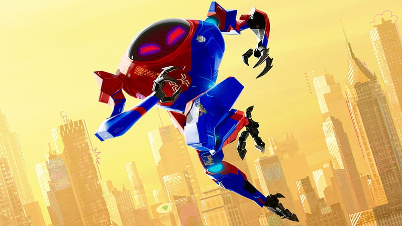
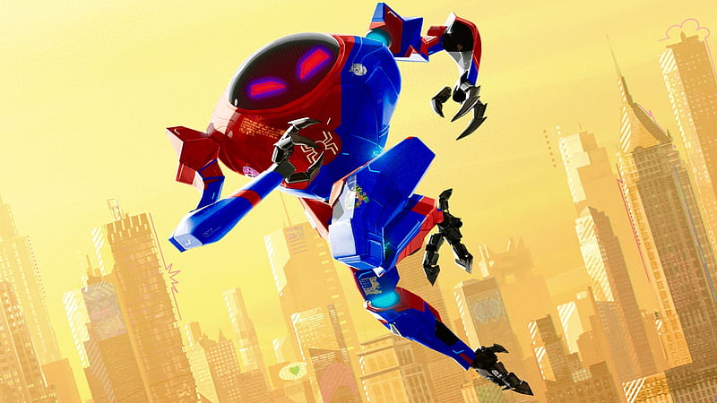
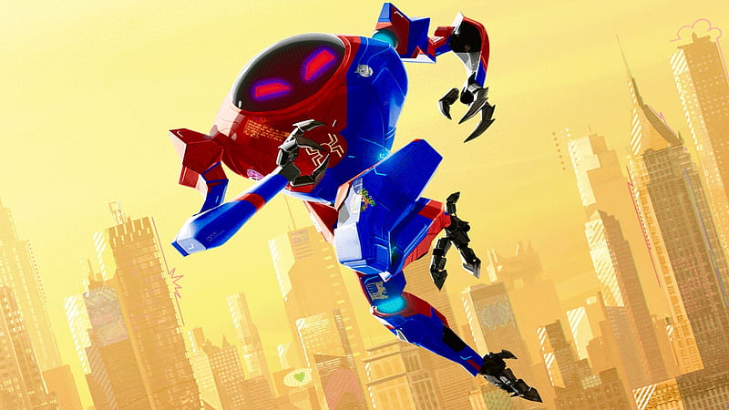

 

“You’re the best of all of us, Miles. You’re on your way.”
Character Description: Peni Parker is a confident and brilliant teenager from an alternate dimension who pilots a high-tech mecha suit called SP//dr. She bonds deeply with a genetically-modified spider and becomes a key member of the Spider-Verse team. Peni brings technical expertise, wit, and heart to the group, helping Miles and others navigate the multiverse while fighting interdimensional threats.
Abilities
- SP//dr Mech Pilot: Controls a high-tech mech suit linked to a radioactive spider.
- Enhanced Reflexes: Neural link with SP//dr allows split-second reactions.
- Technological Genius: Can modify, repair, and upgrade SP//dr in combat.
- Combat Skills: Uses mech’s weapons and mobility for fighting.
- Team Support: Coordinates with other Spider-People to maximize teamwork.
Relationships
- Miles Morales: Mentor and guide across the Spider-Verse.
- SP//dr: Robotic Partner.
- Spider-People across Multiverse: Collaborators and friends.
Background
A teen from a futuristic dimension who pilots a high-tech mech called SP//dr. She forms emotional bonds with her spider and teammates, using both brains and heart to fight evil.
Fun Facts
- First appeared in Edge of Spider-Verse #5 (2014)
- Mech SP//dr can fight giant robots and villains
- Peni represents the tech-savvy, anime-inspired side of Spider-Verse
- She is one of the first Asian-American superheroes to become Spider-Man.